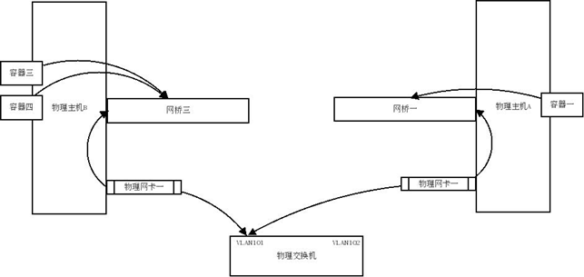

多台物理主机之间的容器互联（暴露容器到真实网络中）
Docker 默认的桥接网卡是 docker0。它只会在本机桥接所有的容器网卡，举例来说容器的虚拟网卡在主机上看一般叫做 veth* 而 Docker 只是把所有这些网卡桥接在一起，如下：
在容器中看到的地址一般是像下面这样的地址：
这样就可以把这个网络看成是一个私有的网络，通过 nat 连接外网，如果要让外网连接到容器中，就需要做端口映射，即 -p 参数。
如果在企业内部应用，或者做多个物理主机的集群，可能需要将多个物理主机的容器组到一个物理网络中来，那么就需要将这个网桥桥接到我们指定的网卡上。
拓扑图
主机 A 和主机 B 的网卡一都连着物理交换机的同一个 vlan 101,这样网桥一和网桥三就相当于在同一个物理网络中了，而容器一、容器三、容器四也在同一物理网络中了，他们之间可以相互通信，而且可以跟同一 vlan 中的其他物理机器互联。

ubuntu 示例
下面以 ubuntu 为例创建多个主机的容器联网:
创建自己的网桥,编辑 /etc/network/interface 文件
将 Docker 的默认网桥绑定到这个新建的 br0 上面，这样就将这台机器上容器绑定到 em1 这个网卡所对应的物理网络上了。
ubuntu 修改 /etc/default/docker 文件，添加最后一行内容
|
在启动 Docker 的时候 使用 -b 参数 将容器绑定到物理网络上。重启 Docker 服务后，再进入容器可以看到它已经绑定到你的物理网络上了。
|
这样就直接把容器暴露到物理网络上了，多台物理主机的容器也可以相互联网了。需要注意的是，这样就需要自己来保证容器的网络安全了。